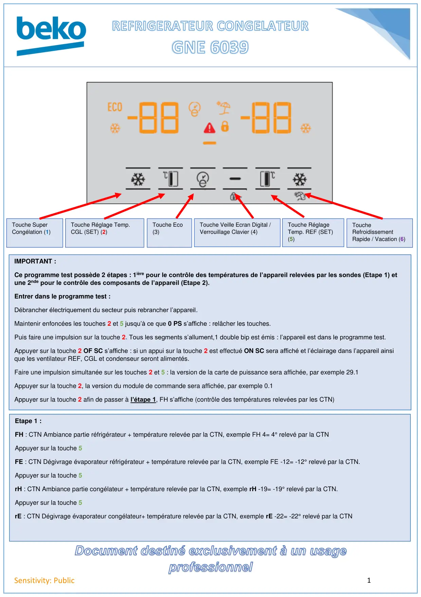
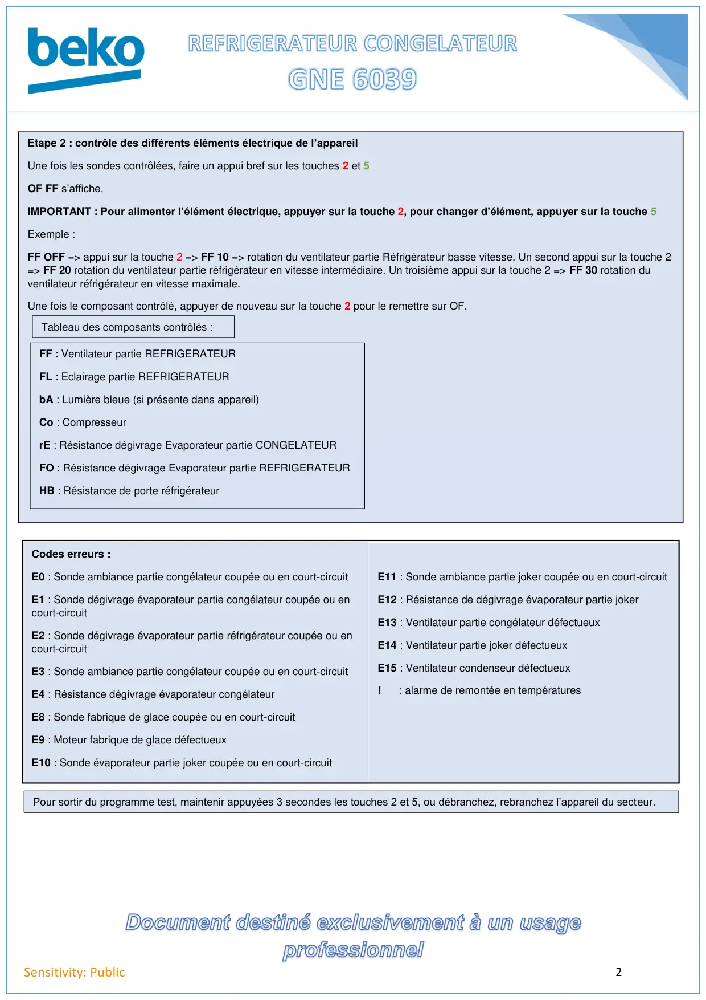

Prog Test REF GNE6039

1Sensitivity: PublicTouche SuperCongélation (1)Touche Réglage Temp.CGL (SET) (2)Touche Eco(3)Touche Veille Ecran Digital /Verrouillage Clavier (4)Touche RéglageTemp. REF (SET)(5)ToucheRefroidissementRapide / Vacation (6)IMPORTANT :Ce programme test possède 2 étapes : 1ière pour le contrôle des températures de l’appareil relevées par les sondes (Etape 1) etune 2nde pour le contrôle des composants de l’appareil (Etape 2).Entrer dans le programme test :Débrancher électriquement du secteur puis rebrancher l’appareil.Maintenir enfoncées les touches 2 et 5 jusqu’à ce que 0 PS s’affiche : relâcher les touches.Puis faire une impulsion sur la touche 2. Tous les segments s’allument,1 double bip est émis : l’appareil est dans le programme test.Appuyer sur la touche 2 OF SC s’affiche : si un appui sur la touche 2 est effectué ON SC sera affiché et l’éclairage dans l’appareil ainsique les ventilateur REF, CGL et condenseur seront alimentés.Faire une impulsion simultanée sur les touches 2 et 5 : la version de la carte de puissance sera affichée, par exemple 29.1Appuyer sur la touche 2, la version du module de commande sera affichée, par exemple 0.1Appuyer sur la touche 2 afin de passer à l’étape 1, FH s’affiche (contrôle des températures relevées par les CTN)Etape 1 :FH : CTN Ambiance partie réfrigérateur + température relevée par la CTN, exemple FH 4= 4° relevé par la CTNAppuyer sur la touche 5FE : CTN Dégivrage évaporateur réfrigérateur + température relevée par la CTN, exemple FE -12= -12° relevé par la CTN.Appuyer sur la touche 5rH : CTN Ambiance partie congélateur + température relevée par la CTN, exemple rH -19= -19° relevé par la CTN.Appuyer sur la touche 5rE : CTN Dégivrage évaporateur congélateur+ température relevée par la CTN, exemple rE -22= -22° relevé par la CTN
1 / 2
2Sensitivity: PublicEtape 2 : contrôle des différents éléments électrique de l’appareilUne fois les sondes contrôlées, faire un appui bref sur les touches 2 et 5OF FF s’affiche.IMPORTANT : Pour alimenter l’élément électrique, appuyer sur la touche 2, pour changer d’élément, appuyer sur la touche 5Exemple :FF OFF => appui sur la touche 2 => FF 10 => rotation du ventilateur partie Réfrigérateur basse vitesse. Un second appui sur la touche 2=> FF 20 rotation du ventilateur partie réfrigérateur en vitesse intermédiaire. Un troisième appui sur la touche 2 => FF 30 rotation duventilateur réfrigérateur en vitesse maximale.Une fois le composant contrôlé, appuyer de nouveau sur la touche 2 pour le remettre sur OF.FF : Ventilateur partie REFRIGERATEURFL : Eclairage partie REFRIGERATEURbA : Lumière bleue (si présente dans appareil)Co : CompresseurrE : Résistance dégivrage Evaporateur partie CONGELATEURFO : Résistance dégivrage Evaporateur partie REFRIGERATEURHB : Résistance de porte réfrigérateurTableau des composants contrôlés :Codes erreurs :E0 : Sonde ambiance partie congélateur coupée ou en court-circuitE1 : Sonde dégivrage évaporateur partie congélateur coupée ou encourt-circuitE2 : Sonde dégivrage évaporateur partie réfrigérateur coupée ou encourt-circuitE3 : Sonde ambiance partie congélateur coupée ou en court-circuitE4 : Résistance dégivrage évaporateur congélateurE8 : Sonde fabrique de glace coupée ou en court-circuitE9 : Moteur fabrique de glace défectueuxE10 : Sonde évaporateur partie joker coupée ou en court-circuitE11 : Sonde ambiance partie joker coupée ou en court-circuitE12 : Résistance de dégivrage évaporateur partie jokerE13 : Ventilateur partie congélateur défectueuxE14 : Ventilateur partie joker défectueuxE15 : Ventilateur condenseur défectueux! : alarme de remontée en températuresPour sortir du programme test, maintenir appuyées 3 secondes les touches 2 et 5, ou débranchez, rebranchez l’appareil du secteur.
2 / 2